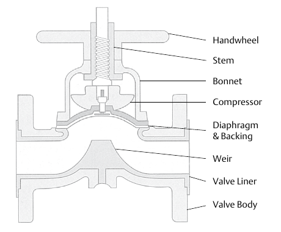

Diaphragm Bodies — Weir-Type Construction

- 1Handwheel — manual position control
- 2Stem — carries handwheel travel down to the compressor
- 3Bonnet — houses the stem and compressor assembly
- 4Compressor — presses the diaphragm down onto the weir
- 5Diaphragm & Backing — the flexible sealing element and its support
- 6Weir — the raised closure point; shortens the diaphragm's closing stroke, extending its service life
- 7Valve Liner — the wetted lining protecting the body from process contact
- 8Valve Body — the pressure-boundary casting
After Control Valve Handbook, 6th ed., Fig. 10.31 — used directly, own printed labels retained (Style Guide Sec 6.3). Component Index: cvh-cmp-weir-type-diaphragm-valve.